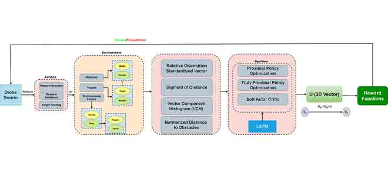
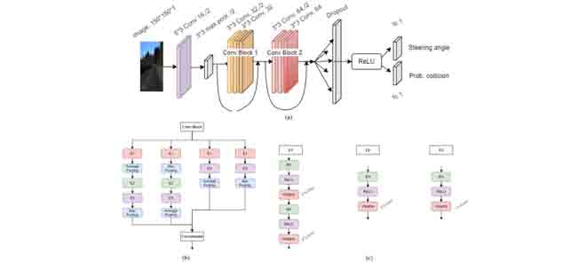
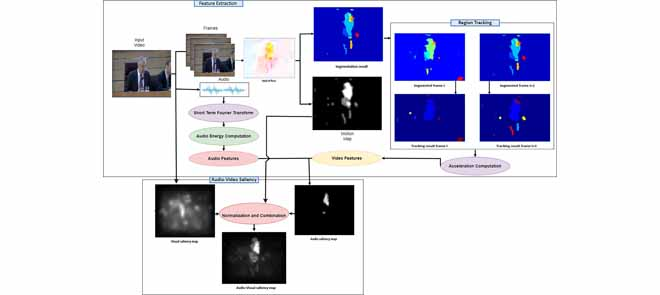
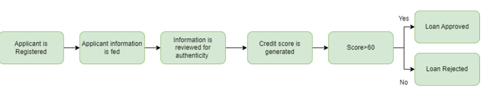
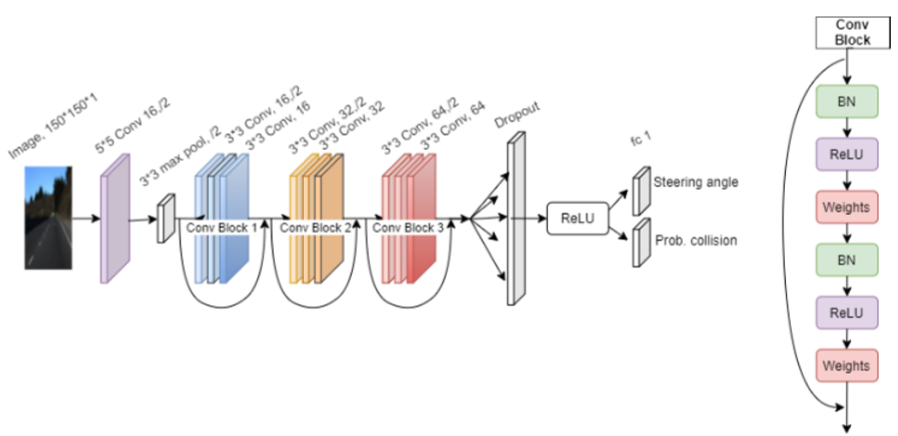

|
I am a Machine Learning and Deep Learning enthusiast with research interest in Computer Vision, Deep Reinforcement Learning and Medical Image Analysis. I have five years of research experience and nine years of programming experiance with six years of experience of Python. Currently I am pursing PhD Oppurtunities and doing freelance work. I completed my MS in Computer Science from Pakistan Institute of Engineering and Applied Sciences (PIEAS), Pakistan, in 2021, with Gold Medal, a certificate for appreciation for my thesis work titled "Utilizing Deep Reinforcement Leaning for Drone Swarm Navigation under the supervision of Prof. Asifullah Khanand Tracking" and a certificate of merit for outstanding performance during my course work. I completed my BS in Computer Science with Gold Medal from University of Kotli Azad Jammu and Kashmir (UoKAJK) in 2018. During my BS, I worked on thesis titled Image Classification using Deep Learning under the supervision of Asst.Prof. Zaheed Ahmed. Email / CV / LinkedIn / Google Scholar / Github / ResearchGate |
{kind=link}
|
My passion revolves around delving into the real-world applications of Artificial Intelligence, particularly in the dynamic realms of computer vision, deep reinforcement learning, natural language processing, and the expansive field of medicine. Over the last 4-5 years, I've been deeply involved in research across these domains, with my discoveries making their mark in esteemed journals and prominent conference presentations. My proficiency in Python programming is robust, coupled with specialized skills in PyTorch, Keras, TensorFlow, OpenCV, and Scikit-Learn. Complementing this, I've garnered invaluable hands-on experience through various freelance projects. Eager to propel my research endeavors to new heights, I am excited about the prospect of leveraging my expertise to make meaningful contributions that positively impact society |
|  |
Suleman Qamar, Saddam Hussain Khan, Muhammad Arif Arshad, Maryam Qamar, Jeonghwan Gwak, Asifullah Khan*, IEEE Acess, 2022/08/26 Paper Link Swarm intelligence has been applied to replicate numerous natural processes and relatively simple species to achieve excellent performance in a variety of disciplines. An autonomous approach employing deep reinforcement learning is presented in this study for swarm navigation. In this approach, complex 3D environments with static and dynamic obstacles and resistive forces such as linear drag, angular drag, and gravity are modeled to track multiple dynamic targets. In this regard, a novel island policy optimization model is introduced to tackle multiple dynamic targets simultaneously and thus make the swarm more dynamic. Moreover, new reward functions for robust swarm formation and target tracking are devised to learn complex swarm behaviors. Since the number of agents is not fixed and has only the partial observance of the environment, swarm formation and navigation become challenging. In this regard, the proposed strategy consists of four main components to tackle the aforementioned challenges: 1) Island policy-based optimization framework with multiple targets tracking 2) Novel reward functions for multiple dynamic target tracking 3) Improved policy and critic-based framework for the dynamic swarm management 4) Memory. The dynamic swarm management phase translates basic sensory input to high-level commands and thus enhances swarm navigation and decentralized setup while maintaining the swarm’s size fluctuations. While in the island model, the swarm can split into individual sub-swarms according to the number of targets, thus allowing it to track multiple targets that are far apart. Also, when multiple targets come close to each other, these sub-swarms have the ability to rejoin and thus form a single swarm surrounding all the targets. Customized state-of-the-art policy-based deep reinforcement learning neuro-architectures are employed to achieve policy optimization. The results show that the proposed strategy enhances swarm navigation by achieving a high cumulative reward and a low policy loss. The simulations show that the proposed framework can efficiently track multiple static and dynamic targets in complex environments. |
|  |
Muhammad Arif Arshad, Saddam Hussain Khan, Suleman Qamar, Muhammad Waleed Khan, Iqbal Murtaza, Jeonghwan Gwak, Asifullah Khan*, IEEE Acess, 2022/09/06 Paper Link Drones are unmanned aerial vehicles (UAV) utilized for a broad range of functions, including delivery, aerial surveillance, traffic monitoring, architecture monitoring, and even War-field. Drones confront significant obstacles while navigating independently in complex and highly dynamic environments. Moreover, the targeted objects within a dynamic environment have irregular morphology, occlusion, and minor contrast variation with the background. In this regard, a novel deep Convolutional Neural Network(CNN) based data-driven strategy is proposed for drone navigation in the complex and dynamic environment. The proposed Drone Split-Transform-and-Merge Region-and-Edge (Drone-STM-RENet) CNN is comprised of convolutional blocks where each block methodically implements region and edge operations to preserve a diverse set of targeted properties at multi-levels, especially in the congested environment. In each block, the systematic implementation of the average and max-pooling operations can deal with the region homogeneity and edge properties. Additionally, these convolutional blocks are merged at a multi-level to learn texture variation that efficiently discriminates the target from the background and helps obstacle avoidance. Finally, the Drone-STM-RENet generates steering angle and collision probability for each input image to control the drone moving while avoiding hindrances and allowing the UAV to spot risky situations and respond quickly, respectively. The proposed Drone-STM-RENet has been validated on two urban cars and bicycles datasets: udacity and collision-sequence, and achieved considerable performance in terms of explained variance (0.99), recall (95.47%), accuracy (96.26%), and F-score (91.95%). The promising performance of Drone-STM-RENet on urban road datasets suggests that the proposed model is generalizable and can be deployed for real-time autonomous drones navigation and real-world flights. |
|  |
Maryam Qamar, Suleman Qamar*, Muhammad Muneeb, Sung-Ho Bae, Anis Rahman IEEE Acess, 2023/02/13 Paper Link / Substantial research has been done in saliency modeling to make intelligent machines that can perceive and interpret their surroundings and focus only on the salient regions in a visual scene. But existing spatio–temporal saliency models either treat videos as merely image sequences excluding any audio information or are unable to cope with inherently varying content. Based on the hypothesis that an audiovisual saliency model will perform better than traditional spatio–temporal saliency models, this work aims to provide a generic preliminary audio/video saliency model. This is achieved by augmenting visual saliency map with an audio saliency map computed by synchronizing low-level audio and visual features. The proposed model was evaluated using different criteria against eye fixations data for a publicly available video dataset DIEM. The evaluation results show that the model outperforms two state-of-the-art visual spatio–temporal saliency models. Thus, supporting our hypothesis that an audiovisual model performs better in comparison to a visual model for natural uncategorized videos. |
|  |
Suleman Qamar, Muhammad Hanif Durad , Faizan Ul Islam , Syeda Rozeena Saleha , Muhammad Hamza , Allay Hyder Urooj , Syed Muhammad Abrar Akber , Journal of Computing & Biomedical Informatics, 2023/06/05 Paper Link Statistical credit rating indicates whether a person is able to pay his debts or not. In this study, the effectiveness of different machine learning (ML) classifiers for credit scoring and bankruptcy prediction is investigated and compared. The main advantage of this system is to reduce the risk of financial crisis and bankruptcy. This will help applicants who wish to find out if they are qualified for credit and how much they are capable of receiving as well as for creditors taking the risk factor into consideration. In the study, credit applicants were divided into two categories: those who paid their bills on time and those who didn't. Using this information, people were classified into those who were eligible for credit and those who weren't eligible for credit. The data set used for credit scores was" GIVE ME SOME CREDIT" from Kaggle. Flask was used to build and deploy the final model. Several machine learning classifiers were used, including bagging, logistic regression, gradient classifier, and random forest classifier. XGboost performed the best among all, achieving 94% accuracy, ROC of 86%, and 92% F1 score. |
|
|
Suleman Qamar*, Maryam Qamar, Muhammad Shahbaz, Muhammad Arif Arshad, Najmus Saher Shah, Asifullah Khan 2022 19th International Bhurban Conference on Applied Sciences and Technology (IBCAST), 2022/068/16 Paper Link Swarm intelligence is the behavior exhibited by a group of organisms performing simple actions in unison which leads to complex global behavior. This learnt behavior promotes formation of artificial swarm systems for accomplishing complex tasks and in this paper, the behavior learnt by a swarm of drones is used to accomplish multiple tasks related to complex environment navigation, obstacle avoidance and single-target tracking. In the past, manual formulation of artificial swarm systems has been attempted. The swarms usually have to be flexible entities that need to adapt to changing environments but manually crafted swarms can’t adapt to newer operating conditions thus they are not feasible. To tackle these challenges, an autonomous drone swarm navigation (ADSN) system is presented by introducing a customized architecture based on Truly Proximal Policy Optimization (TPPO) with the addition of memory cells. Furthermore, suitable 3D environments are designed for conductive learning with the addition of stability factors for drones to mimic real-life environments. Measures like Mean Cumulative Reward (MCR), Value Loss (VL), and Entropy are used to measure the performance of the presented ADSN system and other models with and without LSTM and found that incorporating memory does enhance the performance of the models although in some cases increase might not be that significant. TPPO with memory seems to have least loss and almost always performs best. Significant improvements were achieved compared to existing methodologies in convergence speed and enhanced stability of the model by customizing the architecture and hyper- parameter optimization. It is observed that Soft Actor Critic (SAC) is highly dependent on the values of the hyper-parameters and its results vary greatly with different values of hyper-parameters. The presented model has applications in maze navigation, target tracking, hover drones and other real-time scenarios. |
|  |
Muhammad Arif Arshad*, Saddam Hussain Khan, Muhammad Waleed Khan, Suleman Qamar, Asifullah Khan, Seventh International Conference on Aerospace Science and Engineering (ICASE 2021), 2021/12/01 Paper Link Drones are unmanned aerial vehicles utilized for a broad range of functions, including delivery, aerial surveillance, traffic monitoring, architecture monitoring and even in War field. Indeed, drones confront significant obstacles while navigating independently in unstable and highly dynamic environments. In comparison with the standard “map-localize- plan” approaches, this research paper investigates an information-driven strategy to address the issues mentioned above. For this purpose, a convolutional neural network (CNN) is proposed to pilot a drone across city streets safely. Every input image generates two outputs: a steering angle for the drone's movement whilst dodging the hindrances and the possibility of a collision for alerting the Unmanned Aerial Vehicle (UAV) far away from spotting risky situations and responding quickly. However, gathering enough data in an unorganized outside area such as a metropolis is a challenge. It is not easy to collect data for the sake of the pilots, so data is used, which is collected by mounting a camera on the cars and bikes. This paper suggests that data collected by automobiles and bicycles can be used to train a UAV that would not threaten other vehicles or pedestrians. Dataset is divided using the train-test split method. Despite being trained on urban roads from the perspective of urban cars, the navigation strategy of the proposed architecture is very generalized. The high recall (99.38%), great accuracy (97.78%) and good f-score (94.81%) of the proposed technique suggest that it can be used for autonomous driving of drones. The proposed technique masters a navigation strategy that accomplishes a relatively higher level of accuracy, recall, f-score and precision, which shows that it outperforms previous approaches in the literature. |
|
Design and source code from Jon Barron's website |